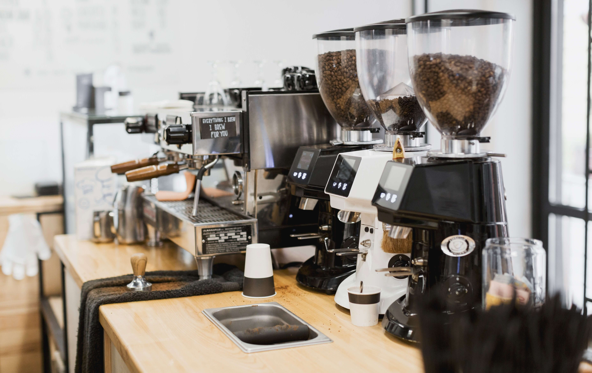

¿Quienes somos?
Somos un grupo de X personas apasionadas por el café, unidos por una amistad sólida y un sueño compartido. La magia de esta bebida nos envolvió y cautivó, convirtiendo nuestra pasión en una visión. Juntos, creamos algo más que un simple local de café; forjamos un espacio donde los aromas de los granos tostados se mezclan con risas y conversaciones, donde las tazas se llenan de historias y los corazones encuentran refugio. En este rincón acogedor, cada taza es una oportunidad para compartir momentos especiales, inspirar ideas y construir recuerdos que perduran. Somos un equipo de amigos que transformó su amor por el café en un rincón de alegría y camaradería, un recordatorio de que cuando sigues tus pasiones, puedes crear algo hermoso y duradero. ¡Únetenos en esta aventura de sabores y amistad, porque aquí, en nuestro café, la pasión se sirve en cada taza!
Crear nuestro café no fue un camino sencillo. A pesar de nuestra pasión compartida por el café, enfrentamos numerosos desafíos en el camino hacia la realización de nuestro sueño. Desde el primer día, cuando estábamos decididos a transformar nuestra visión en realidad, supimos que había un largo viaje por delante.

La búsqueda de un lugar adecuado para nuestro café resultó ser una tarea desalentadora. Visitamos innumerables locales, cada uno con sus propios problemas: algunos eran demasiado pequeños, otros demasiado caros, y algunos estaban en ubicaciones que no nos gustaban. Pasamos noches enteras buscando y debatiendo, hasta que finalmente encontramos el espacio perfecto, un pequeño rincón en una calle tranquila que tenía el encanto que buscabamos.
La construcción y la decoración del local también presentaron sus desafíos. Las largas noches de pintura, la instalación de muebles y la decoración meticulosa nos pusieron a prueba. Hubo momentos en los que estábamos agotados y casi listos para abandonar, pero el apoyo mutuo y la visión de nuestro café terminado nos impulsaron a seguir adelante.

Finalmente, llegó el día de la gran apertura. Estábamos llenos de nerviosismo y emoción mientras abríamos las puertas por primera vez. A medida que las primeras personas entraban y disfrutaban de nuestro café recién hecho, supimos que todos los desafíos y obstáculos habían valido la pena.
Nuestro café se convirtió en más que un lugar para tomar café; se convirtió en un refugio para la comunidad, un lugar donde la gente se reúne, se relaja y se inspira. A pesar de los momentos difíciles en el camino, nunca perdimos de vista nuestra pasión y nuestro sueño, y hoy, mirando atrás, estamos agradecidos por cada desafío que enfrentamos, porque nos hizo más fuertes y nos llevó a donde estamos ahora.